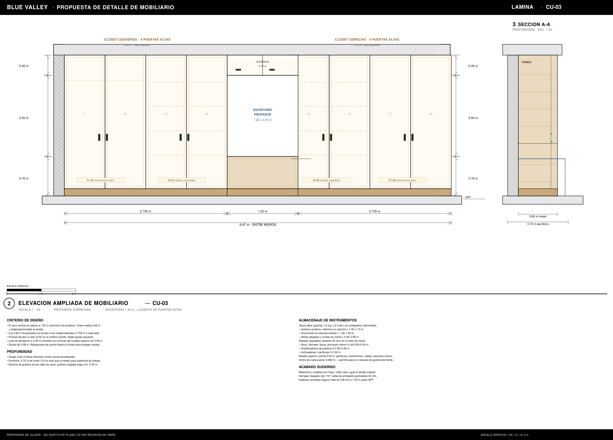
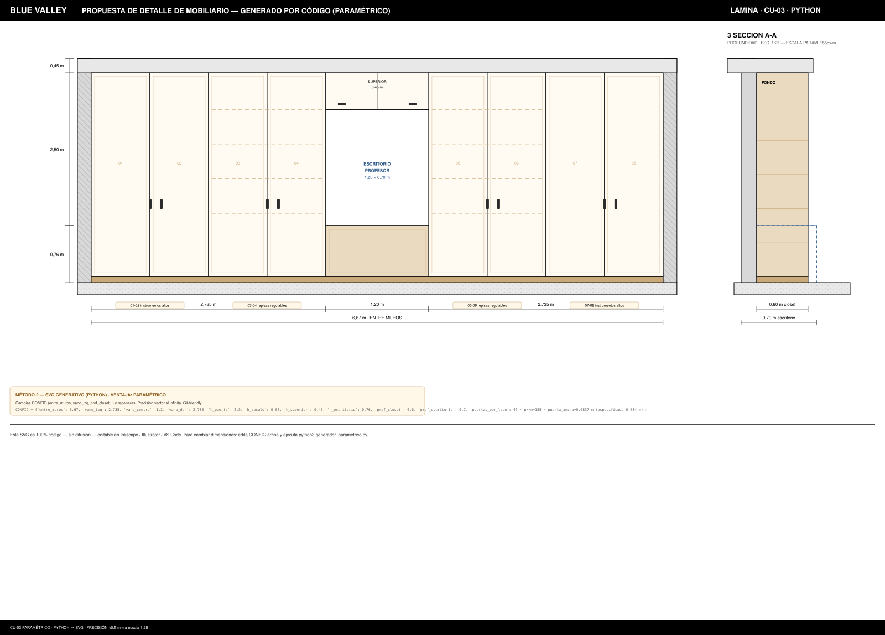

NO ES DIFFUSION — ES CÓDIGO VECTORIAL PRECISO, ESCALABLE, EDITABLE
Tu lámina 2 ELEVACIÓN AMPLIADA DE MOBILIARIO — CU-03 (esc. 1:25) fue reproducida sin IA generativa de imágenes. Todo es SVG / Canvas / Python paramétrico: cotas reales (6,67 m entre muros, 2,735 m + 1,20 m + 2,735 m, 2,50 m puertas, zócalo 0,08 m, profundidades 0,60/0,70 m), textos vectoriales, hatch y zócalos. Abre los .svg en Inkscape/Illustrator o imprime a 1:25. La difusión no puede garantizar una cota de 0,684 m por puerta — el código sí, al milímetro.


Render Canvas 1:25 live: zócalo 0,08 m, puertas 2,50 m, superior 0,45 m. El código es la fuente de verdad, no píxeles alucinados. Exportable a PNG/SVG con un click (ver botón derecho → Guardar imagen).
\draw (0,0) rectangle (2.735,2.50); — ideal para memoria técnica con tipografía perfecta.CU-03.dxf con layers COTAS, MUROS, MOBILIARIO para AutoCAD/Revit. Cada cota es entidad DIMENSION medible.cairosvg.svg2pdf() ya probado arriba — imprime a escala 1:25 sin rasterizar..dxf o .tex en segundos con tus layers/CTB.
| Criterio | Código (SVG/Canvas/Python) | Difusión (Midjourney/DALL·E/SD) |
|---|---|---|
| Precisión de cotas | Exacta al mm. 2,735 m es 2,735 m | Alucina números, deforma dígitos |
| Texto legible | Vectorial, editable, sin faltas | Texto borroso / con errores |
| Escala 1:25 | Imprime y mides con escalímetro | Sin escala real |
| Editabilidad | Cambias 1.20→1.50 m en 1 línea | Re-generas y rezas |
| Capas / DXF | Layers, CTB, bloques | Solo imagen plana |
| Versionado | Git diff legible | Binario opaco |
| Coste | Local, gratis, reproducible | Créditos / GPU |
<!-- Fragmento real de CU-03_elevacion_precisa.svg: puerta 01 con cota -->
<rect x="168" y="144" width="106.25" height="349" fill="#FFFBF2" stroke="black" stroke-width="1.1"/>
<rect x="174" y="150" width="94.25" height="337" fill="none" stroke="#D9C2A0" stroke-width="0.7"/>
<!-- cota 0.45 m superior -->
<line x1="125" y1="144" x2="125" y2="197" stroke="black" stroke-width="0.5"/>
<text x="62" y="175" font-size="8" text-anchor="middle">0.45 m</text>
<!-- todo es vector, escalable a plotter -->/SVGMCP/:
CU-03_elevacion_precisa.svg ·
CU-03_parametrico.svg ·
generador_parametrico.py ·
PNG previewcairosvg CU-03_elevacion_precisa.svg -o CU-03.pdf